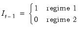
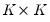
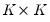

|
|
|
is the response of variable i at horizon step h to a unit shock in variable j. Thus, the responses for all of the variables to a unit shock at horizon
are obtained by post-multiplying the matrix by the corresponding unit impulse vector.
If the innovationsare contemporaneously uncorrelated (
is diagonal), it is easy to interpret the impulse responses: an impulse in the j-th error is equivalent to a shock to the j-th endogenous variable, which produces a response in all of the variables at different horizons.
The innovations, however, are typically correlated. We may think of correlation in the errors as emanating from an unmodeled common component. Given this commonality, it becomes conceptually difficult to interpret an impulse in the j-th error that is not accompanied by shocks in related variables.

 . If the system is modeled as a vector autoregressive (VAR) process of order
. If the system is modeled as a vector autoregressive (VAR) process of order  , the data generating process (DGP) for the system is written as:
, the data generating process (DGP) for the system is written as: and
and  are vectors,
are vectors,  are
are  matrices, and , where
matrices, and , where  is a  covariance matrix.
is a  covariance matrix. ) which provides the coefficient weights on the innovations in the impulse response.
) which provides the coefficient weights on the innovations in the impulse response. are based on the recursion
are based on the recursion is longest response horizon of interest.
is longest response horizon of interest.  are computed by simply replacing with the corresponding estimates .
are computed by simply replacing with the corresponding estimates . vertically, the estimated full impulse response path is given by:
vertically, the estimated full impulse response path is given by:
 . It follows that the impulse responds with respect to innovations in
. It follows that the impulse responds with respect to innovations in  are governed by
are governed by , where the operator denotes the best mean squared error predictor and is the matrix of its lags.
, where the operator denotes the best mean squared error predictor and is the matrix of its lags. . By construction, the estimated slopes
. By construction, the estimated slopes  may be interpreted as the response of to a reduced-form disturbance in period
may be interpreted as the response of to a reduced-form disturbance in period  , and we may define the impulse response estimators,
, and we may define the impulse response estimators, is
is  ,
,  is , and is
is , and is  where
where from this set of equations, the impulse response paths for the two regimes are given by,
from this set of equations, the impulse response paths for the two regimes are given by,